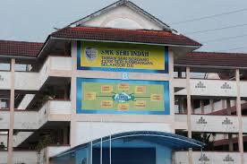
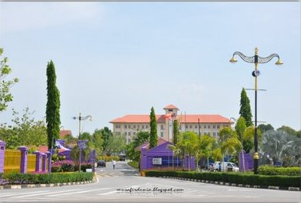

| SK Seri Indah | I attended Sk Sri Serdang, which is located in Taman Serdang Jaya, Selangor. I started studying at this school in 2011 when I was 7 years old and in Grade 1. Throughout my 6 years at Sk Sri Serdang, I gained many experiences and learned various new things. I completed my schooling at Sk Sri Serdang in 2017 after 6 years of studying there, leaving behind sweet memories with my friends and teachers. | |
|  | SMK Seri Indah | At the age of 13, I transfered to Smk Seri Indah, located in Taman Serdang Jaya, Selangor. This school was close to Sk Seri Indah, which made my transition to secondary school easier. At Smk Seri Indah, I sat for the PT3 and SPM exams. However, my biggest challenge came during the SPM exams when I contracted COVID-19 and had to postpone the exam. Despite facing difficult situation, I still put in my best effort to succeed in the exams. |
|  | UiTM Merbok | After completing my SPM, I applied through UPU to choose the diploma program I wanted. Although my first choice was a Diploma in Culinary Arts, I was ultimately accepted into the Diploma in Library Informatics, my third choice. I accepted this offer with an open minded because rejecting it would have left me with only STPM an option. Initially, I was a bit dissapointed, but over time, I began to enjoy my studies in this field and learned many new things that would be beneficial for the future. |